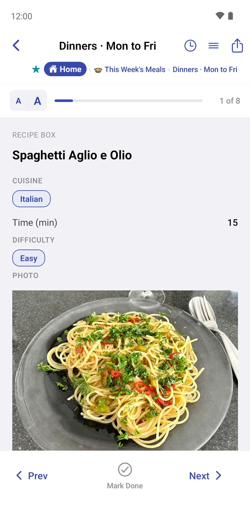
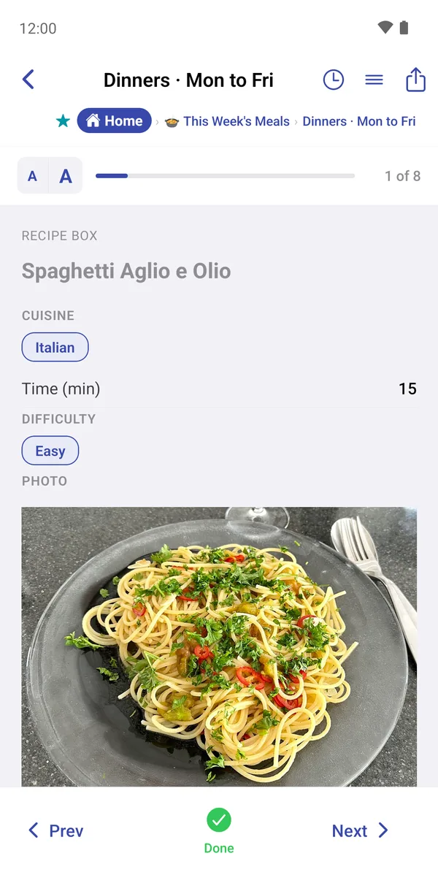
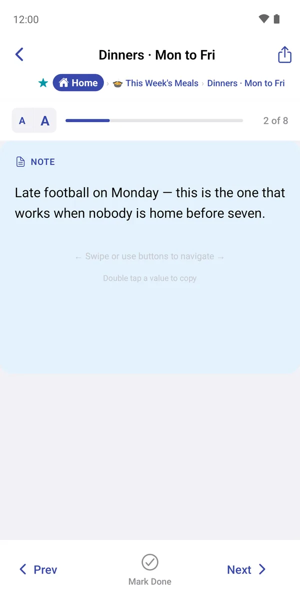
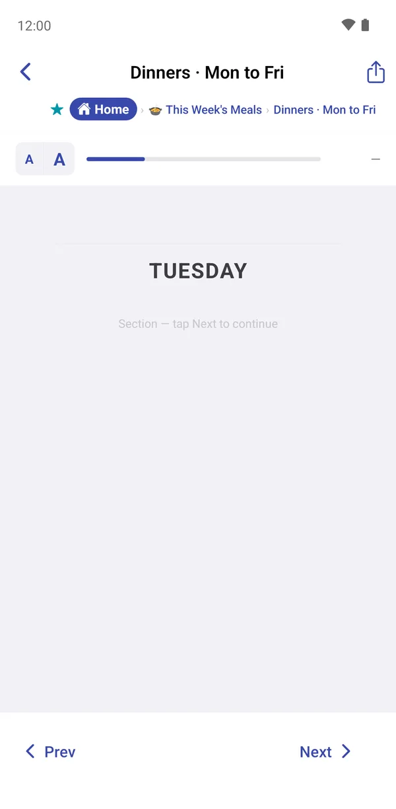
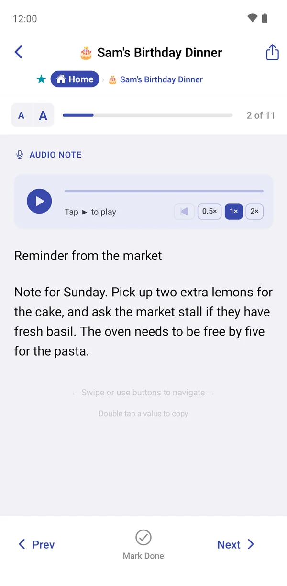
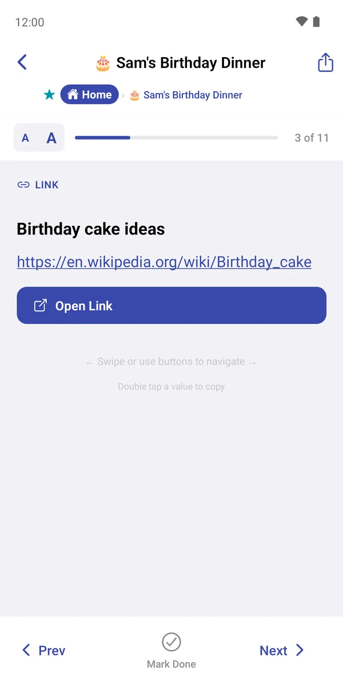
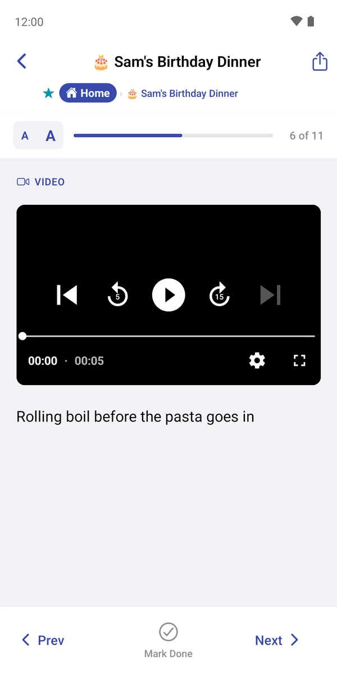
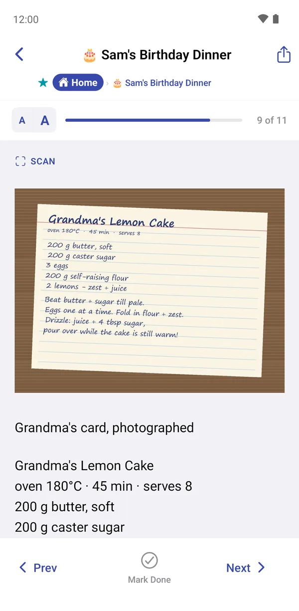
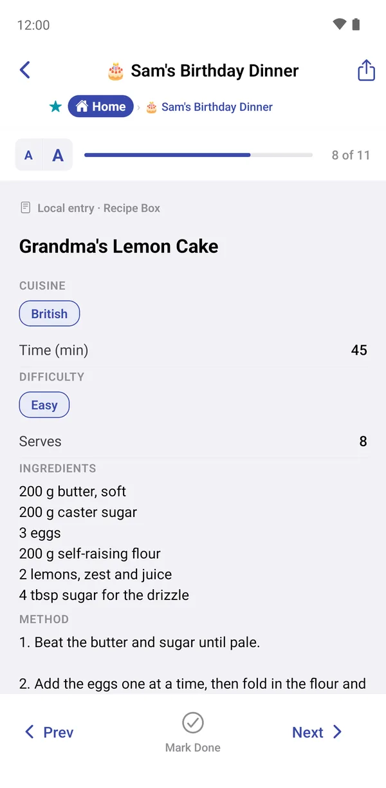
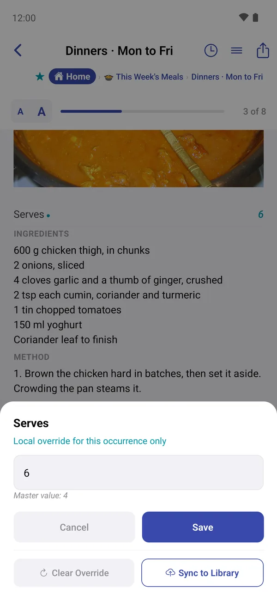

Playing a list
The player shows one item at a time, full screen, so you can work through a list: cooking tonight's recipe, running a class, performing a set. Tap any item in a list or group to open it there.
Moving through the list
- Swipe left or right, or tap Next and Prev.
- The bar at the top shows how far through you are, e.g. 1 of 11.
- Scroll down within an item to see all its fields: the whole method, ingredients and photos.
- Tap a photo to open it full screen: pinch to zoom, double-tap to reset.
- Double-tap any value to copy it.

Marking items done
Tap Mark Done when you've finished an item. It turns into a green Done tick. Tap it again to undo.
Progress shows up everywhere: ticks in the group, a filling circle on the group card, and a completion rate in Trends.
- Section headings and dividers never need ticking.
- To start fresh next week, open the group, tap ••• and choose Reset Progress. This clears every tick in that group and can't be undone.
- You can also tick items without opening them: long-press → Toggle Done.

What each kind of item looks like







A file shows its name with an Open in App button, and a photo fills the card with its description underneath.
Changing a value just for this list
Sometimes a list needs a slightly different version of a library item. On Tuesday the curry is doubled, so Serves should say 6 here, but the Recipe Box should still say 4.
- In the player, long-press the value you want to change.
- Type the new value. The sheet says Local override for this occurrence only and shows the library's Master value underneath.
- Tap Save.
Overridden fields are marked with a small ● dot. Open the sheet again to:
- Clear Override: go back to the library's value;
- Sync to Library: make this the new value in the library too, for every list.
Long-pressing an empty field (Long press to add) works the same way.

Text size, field order and usage
- The small and large A buttons make the text smaller or bigger, which helps when the phone is propped up across the kitchen.
- ≡ (on library items) opens Reorder Fields, so you can put the fields you read first at the top, for example Ingredients before Photo.
- The clock shows Usage: every list and group this item has been used in.
- The share button sends the current item. See Sharing.